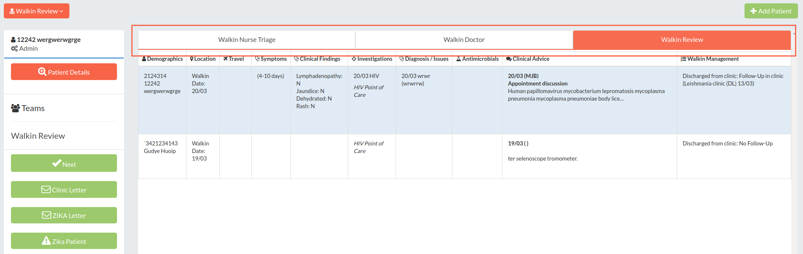
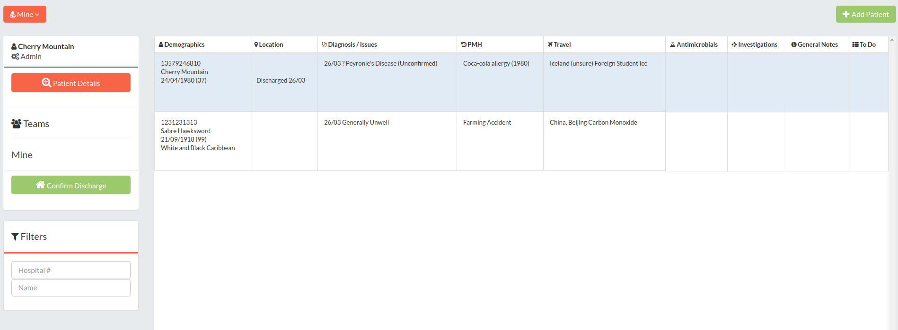
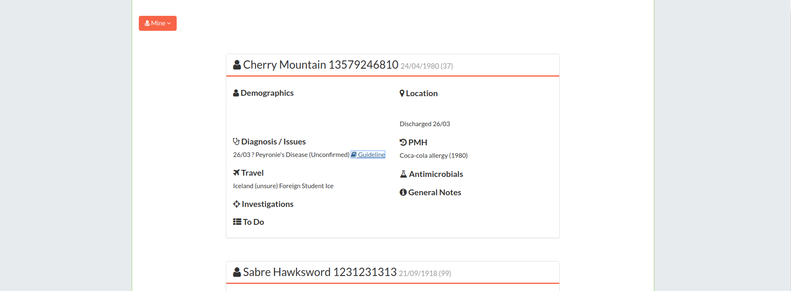
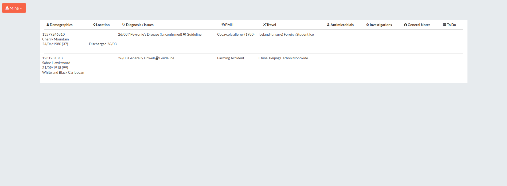

opal.core.patient_lists
The patient_lists module defines a number of classes for working with lists of patients.
class opal.core.patient_lists.PatientList
PatientList.allow_add_patient
Whether we should show the add patient button. Defaults to True.
PatientList.allow_edit_teams
Whether we should allow the user to edit teams. Defaults to True.
PatientList.comparator_service
A custom comparator service to set sort order within a list. Defaults to None. Further information on Comparators can be found in the Opal Guides section.
PatientList.direct_add
Further information is available in the Guides section.
PatientList.display_name
How we want to refer to this list on screen to users.
PatientList.order
Passing an integer to PatientList.order will allow you to control the order of display of Patient Lists in dropdowns and other views. Further information is available in the Guides section.
PatientList.queryset
Further information is available in the Guides section.
PatientList.schema
Further information is available in the Guides section.
PatientList.slug
Further information is available in the Guides section.
PatientList.template_name
To override the default Patient List template opal/templates/patient_list/layouts/spreadsheet_list.html
with a custom template specify the path of the custom template (relative to /myapp/templates/) with
this property.
# myapp/patient_lists.py
class MyPatientList(PatientList):
template_name = 'my_layout.html'
Will look for a template at /myapp/templates/my_layout.html.
Opal includes three patient lists out of the box: spreadsheet_list.html, card_list.html, and table_list.html. See Built-in PatientList Templates below for further details.
All these patient list layout templates use Django {% extends %} syntax to extend their base templates respectively. Each of these base templates contains Django {% block %}s, so you can override selected parts of the base template by creating a new file in patient_lists/layouts/ called, for example spreadsheet_list.html, and redefining the content of those blocks.
<!-- patient_lists/layouts/spreadsheet_list.html -->
{% extends 'patient_lists/layouts/spreadsheet_list_base.html' %}
{% block content %}
... my new block content ...
{% endblock content %}
Classmethods
PatientList.get_absolute_url()
Returns a string which is the absolute URL of this list.
MyList.get_absolute_url()
"/#/list/my_list"
PatientList.get_icon()
Returns a string which is the icon for this list. Defaults to None.
MyList.get_icon()
"fa-wave"
PatientList.get_display_name()
Returns a string which is the display name for this list. Defaults to None
MyList.get_display_name()
"The List"
PatientList.as_menuitem(href=None, activepattern=None, icon=None, display=None, index=None)
Return an instance of opal.core.menus.MenuItem that will direct the user to this
patient list.
TaggedPatientList
Tagged Patient Lists inherit from Patient Lists - as such they have all of the same methods and properties of Patient Lists.
PatientList.visible_to
Further information is available in the Guides section.
class TaggedPatientList
Tagged Patient Lists inherit from Patient Lists - as such they have all of the same methods and properties of Patient Lists.
Properties
TaggedPatientList.tag
The main, or parent tag for this list. Should be lowercase, with no numbers or dashes. Underscores are OK. Further information is available in the Guides section.
TaggedPatientList.subtag
The child tag for this list. Should be lowercase, with no numbers or dashes. Underscores are OK.
class TabbedPatientListGroup
Groups Patient Lists together, to display as tabs at the top of any list in the group. .
TabbedPatientListGroup.for_list
Returns the group for a given PatientList. Raises ValueError if not passed a PatientList.
TabbedPatientListGroup.get_member_lists
A hook for dynamically customising the members of this list group. Returns an iterable of PatientLists. Defaults to the .member_lists property.
TabbedPatientListGroup.get_member_lists_for_user
Returns an iterable of the visible member lists for a given user.
TabbedPatientListGroup.member_lists
A list containing the PatientList subclasses in this group.
TabbedPatientListGroup.visible_to
Predicate function to determine whether this list is meaningfully visible to this user.
Built-in PatientList Templates
Opal includes three patient lists out of the box: spreadsheet_list.html, card_list.html, and table_list.html.
All these patient list layout templates use Django {% extends %} syntax to extend their base templates respectively. Each of these base templates contains Django {% block %}s, so you can override selected parts of the base template by creating a new file in patient_lists/layouts/ called, for example spreadsheet_list.html, and redefining the content of those blocks.
'Spreadsheet' PatientList Layout
This is the default template, which gives you a 'spreadsheet'-like view of the patient list, with a sidebar containing default demographic info, tags and action tools.

'Card' PatientList Layout
This will display the patient list as a series of 'cards', more analogous to a Twitter stream than the spreadsheet-like appearance of the default list.

To use this layout, change your PatientList template_name to "patient_lists/layouts/card_list.html".
'Table' PatientList Layout
This will display the patient list as a wide 'table', similar to the spreadsheet-like appearance of the default list, but without the sidebar and without the ability to edit individual items from this view. This view is commonly used when the user action is to click through to a patient detail view, or to provide action buttons in a column.

To use, just change your PatientList template_name to "patient_lists/layouts/table_list.html".